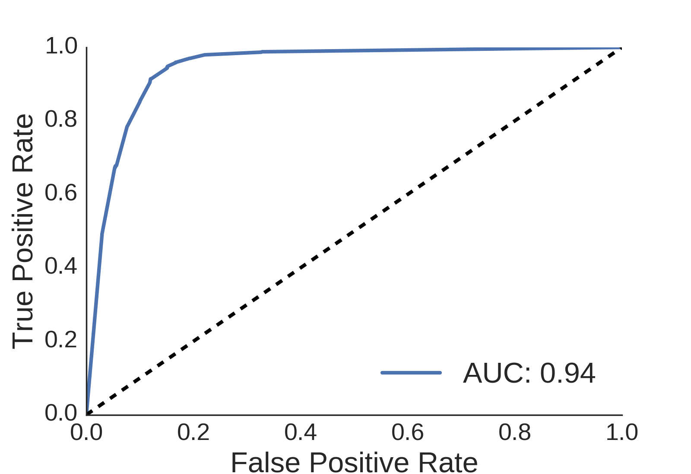
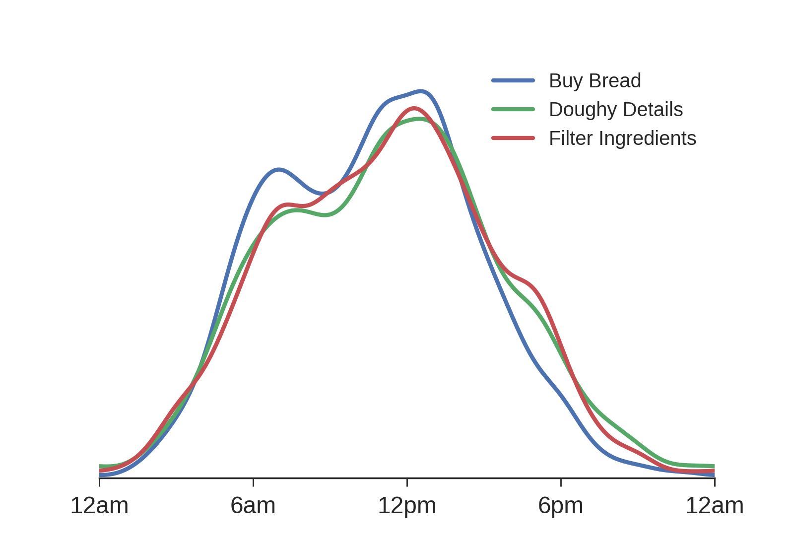

Insights for All
As an Insight Fellow in the Summer session of 2016 I worked as a consultant with a local start-up. They are business-to-business company that provides a platform to track user events on an app or website and deploy targetted messaging to users based on those events. Messages can be sent at both specific times or through event triggers and can be delivered through emails, mobile push notifications and SMS.
My partner company has a variety of clients, some of which have not yet started to build a data team. The problem I solved for them is to provide these clients with actionable insights that don't require deep statistical knowledge or the interpretation of a complicated figure or chart. To that end, I built a pipeline that performs analysis on user events and timestamps to produce clear, textual insights that can be readily acted upon.
As an example, let's look at a fictionalized version of my partner's many clients. "Ben's Bread" is a new app through which you can order freshly baked loaves of bread delivered directly to customers in the Valley. To be explicitly clear, the data shown below is real data from a client, but in order to protect client identity, the names of events have been changed and the timestamps have been shifted in time.
When a client sits down to set up a new messaging campaign, one of the first questions they might ask is how maximize the bread and butter action for their app. In the case of "Ben's Bread", this action is Buy Bread and corresponds to a user putting in an order for a bread delivery. Using a random forest classifier as implemented in the Python package scikit-learn, good discrimination can be made between users, with an area under the ROC curve of 0.97.

However, a ROC curve is not necessarily an easy concept to explain. Instead of providing this chart, I return to the client a textual response with a straightforward description:
A statistical tool called a random forest classifier is able to discriminate customers who will Buy Bread from users who will not with 92.6% accuracy.
An advantage of using a random forest classifier is that feature importance is readily computed. The top 5 most important events are reported to the client:
The events that are the most important to discriminate users are:The next step in the pipeline is to quantify the importance of these features. I compute the conditional probability of a user performing Buy Bread or not, given the user has performed one of the important features. Taking the ratio of these values quantifies the impact of different events on Buy Bread. For Ben's Bread, the output from this part of the pipeline is:
- Add Loaf
- Remove Loaf
- View Daily Bread
- Doughy Details
- Filter Ingredients
Users who...
- Buy Bread have always done View Daily Bread.
- Doughy Details are... 7.5x more likely to Buy Bread.
- Filter Ingredients are... 1.3x less likely to Buy Bread.
A few interesting insights can be understood from this output. The fact that all users who Buy Bread have a corresponding View Daily Bread is a validation that the app is working, since users must pass through this page in order to make a purchase. Users who look at product details trigger a Doughy Details event, and users who have looked at product details are 7.5 times more likely to Buy Bread. This is a useful insight, because it shows that users who look at the product page are exciteded by what they see and make a purchase at an increased rate. Because this feature is clearly having a postivie impact on the user experince, it would be a good feature to focus A/B testing on to see if user engagement can be further encouraged.
Perhaps most interestingly, users who Filter Ingredients are actually less likely to go on and make a purchase. There are a few reasons this may be the case. One possibility is that users are not finding products they are interested in, and sending out user surveys to find products users might be interested might be a good investment. Another possibility is a problem in the tech stack, perhaps the filtering function isn't working properly or is returning nonsensical results in certain cases. Doing a deep dive into understanding this issue would be an actionable insight with high ROI.
Another useful insight is the time of day at which users are active. Using kernel density estimation from scikit-learn, I compute the probability distribution of daily activity for each event.

I use a peak finding algorithm to to determine a few times where users are maximally active:
Users are mostly likely to...
- Buy Bread at... 7am and 1pm
- Doughy Details at... 8am and 1pm
- Filter Loaves at... 7am and 12pm
The start-up I partnered with is excited about these results, which are applicable to all of their many clients. I delivered the pipeline outlined in this blog post in a Jupyter notebook, and they are currently implementing it into their user interface.
Model Details
The features available for each company are a log of user ids, event names, and timestamps. The engineered features for classification are counts of each event type for each user. The key problems in interpretting this data is that many features will be irrelevant, the dimensionality may be very high depending on how many a client has defined, some events will likely be correlated, and most importantly the results of a classifiction algorithm need to be interpretable. For these reasons, I decided to use a random forest classifier, which can handle all of these problems well.